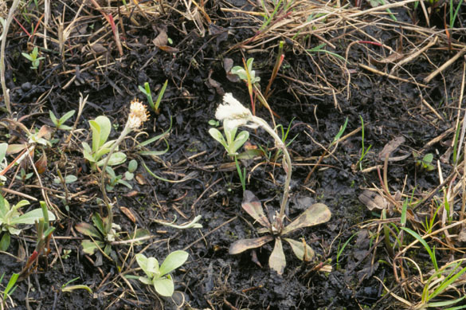

Antennaria Neglecta
Family: Asteraceae
Wooly Cat's Foot
Swink/Wilhelm #3
FLOWERING: Mid-April to early May
SEED TIMING: May - June
HABITAT: Dry prairies and open savannas
DIAGNOSTIC FEATURES: Up to 8 inches high, but usually ground-hugging on bare soil. Does not grow in a matrix of other species. Basal rosette of white, woolly, single-veined leaves. A central stalk capped with tiny, white flower tufts. Dioecious - male and female plants are separate. The male plant has compact, globose heads; female plants have more elongated heads and taller stems.
TO PICK: Stages of flowering and ripe seeds are hard to tell apart visually. After flowering, the seeds can ripen quickly. Pull on the white oval seed heads; ripe seeds will come off and quickly separate into hundreds of tiny seeds with parachutes.